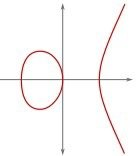
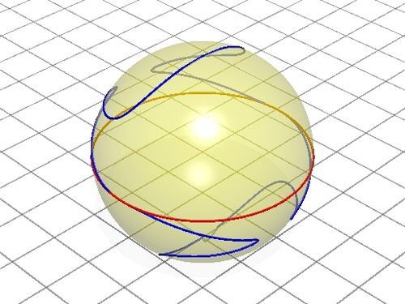
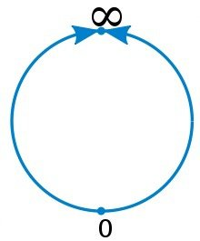
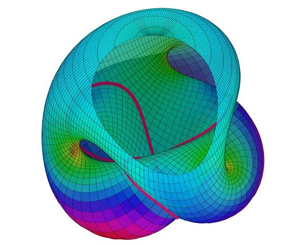

Could we "invent" a number such that , similarly to the way we "invented" ? What would be the effect on modern math if we did so?
You may not be aware of this, but mathematicians are very imaginative and creative people. They love defining new things, they love analogies, they love challenging accepted assumptions and they love completeness and symmetry.
Any one of those reasons alone provides ample motivation to explore the idea of adding 1/0 to our algebraic, geometric or analytic domains.
- Just for the sake of defining something new, a mathematician would be curious to see what happens if 1/0 becomes a thing.
- By analogy with "x^2=-1 is unsolvable so let's invent a solution", a mathematician would naturally be led to consider "0\times x=1 is unsolvable so let's invent a solution".
- Just to challenge the accepted norm of "division by zero is meaningless", many mathematicians would wonder what happens if we try to divide by zero anyway.
- Just because how symmetric it would be to let division apply to all numbers, the way addition and subtraction and multiplication are, any mathematician is compelled to try and "complete the system" so it's fully symmetric.
And of course, mathematicians did do this, in many different ways, for centuries.
From a purely algebraic standpoint, it turns out that not much is gained by allowing 0 to have a multiplicative inverse. The cleanest definition of an algebraic structure supporting both addition and multiplication and in which every element is invertible is called a wheel, and while they are perfectly ok structures, wheels were never found to have any deep utility or much innate beauty.
In fact, algebraists found quite the opposite to be true: a rich, fruitful and insanely useful theory emerges if we let more elements beyond 0 to have no inverse. Instead of allowing division by 0, we disallow division by 7, or 23 and 11, or other combinations. The theory of rings studies algebraic structures where some, but not all, elements are invertible. Within that theory, the crucial idea of localization studies exactly what happens when you add certain carefully chosen inverses but not others. What if we consider only fractions with odd denominators? What if we invert every polynomial except those that are 0 right there? That's localization, and it's a brilliant idea.
So much for algebra. On the other hand, in geometry, the notion of "infinite slope" has been a profound and immensely fruitful idea.
When you learn analytic geometry in school, you are taught that every line in the plane is described by an equation like y=ax+b. Well, actually, not every line. Vertical lines cannot be described in this way. Why? Because the slope a is "rise divided by run" as they say in the US, or \Delta y/\Delta x, or some such thing, and that leaves the poor vertical lines out of the game.
That's not very nice, is it? There's nothing wrong with vertical lines. So we switch to using a more symmetric expression like ax+by+c=0, and now the slope is -a/b and if b=0 that's "infinity" and that's ok. The line x+23=0 is a fine line, and its slope is your favorite number 1/0.
Of course now the triplet a,b,c defines the exact same line as ta,tb,tc, so all we care about is the triplet [a:b:c] up to a scalar multiple of all three numbers, meaning [1:2:5]=[3:6:15], and behold, we just invented the projective plane.
Unsurprisingly, this is a beautifully symmetric structure, where every two points make a line and every two lines meet at a point and the annoying special case of "parallel lines" is gone. Allowing division by zero for infinite slopes is a really smart move: it creates a geometrically complete and homogenous structure. It lets us see that this elliptic curve

is really two circles

Which really are just part of a beautiful torus, if we allow complex numbers.
The same idea can be used to invent projective spaces of all dimensions, and if we take it one dimension lower than we just did, we get the projective line, which is made up of pairs [a:b] which aren't both 0 and where [a:b]=[ta:tb] for t\neq 0.
Because of this equivalence, the pair [a:b] can naturally be identified with the number \frac{a}{b}, since of course \frac{a}{b}=\frac{ta}{tb}. That means that the projective line is the same as the ordinary real line... except for one point, denoted [1:0], which would just correspond to your favorite ratio \frac{1}{0}.
So the projective line naturally introduces this new point, and geometrically, it very reasonably corresponds to a circle, obtained by wrapping up the real line and adding the new point [1:0] just where positive infinity and negative infinity meet.

The projective line alone is a bit boring, but two generalizations make it super interesting: moving up one or more dimensions to the projective plane and beyond, or changing the underlying domain from the real numbers to the complex ones. This second move is similar to switching to two dimensions, but is now described by one complex variable rather than two real ones. It's called the Riemann Sphere and is one of many important complex analytic manifolds.
Back to the first generalization, the projective plane. Despite being smooth and homogenous and two-dimensional, the projective plane doesn't fit in our meager 3-dimensional space so I can't show you a really nice picture of it. All we have are distorted partial visualizations, like the one below.

Sometimes, just before falling asleep after making love, I catch a glimpse of it in its full, symmetrical beauty.